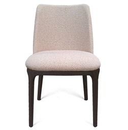
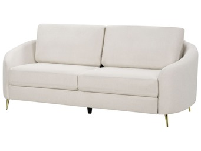
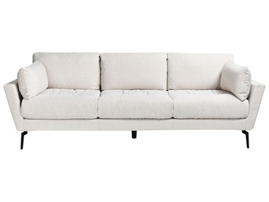
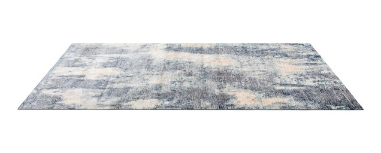

Unser Unternehmen Tenerife North Cleaning Service ist ein polnisches Team, das personalisierte Dienstleistungen in den Bereichen Urlaubs- und Gewerbereinigung, Immobilienverwaltung und Polsterreinigung anbietet. Wir verfügen über umfassendes Wissen zur Sauberkeit und zum ansprechenden Erscheinungsbild Ihres Zuhauses. Die Zufriedenheit unserer Kunden liegt uns am Herzen.
Die Idee zur Unternehmensgründung entstand in Island, wo wir jahrelange Erfahrung in diesem Bereich gesammelt haben. Wir wissen, dass Kunden hohe Qualität und Professionalität erwarten – und genau das sind unsere Prioritäten.
Wir gehen auf jeden Kunden individuell ein. Ihre Zufriedenheit ist für uns das Wichtigste.
Unser Standort ist Longuera Toscal, in der Nähe von Puerto de la Cruz.
Dienstleistungen
Reinigungspreise für Wohnungen:
1 Schlafzimmer – 65 EUR
2 Schlafzimmer – 89 EUR
3 Schlafzimmer – 109 EUR
*Der Preis beinhaltet Reinigung und Waschen von Bettwäsche (Spannbettlaken, Bettlaken, Kissenbezüge), Badetücher, Küchentücher, Handtücher, Badezimmermatten.
Villareinigung: Preis auf Anfrage
Willkommenspaket (auf Wunsch des Eigentümers): 10 EUR (inklusive Wein, Wasser, Kaffee, Tee, Toilettenpapier, Müllbeutel)
Wenn Sie eine Wohnung, ein Haus oder ein Büro besitzen, sind wir ein vertrauenswürdiges und erfahrenes Unternehmen, das Ihr Eigentum sauber hält. Wir bieten einmalige oder regelmäßige Reinigungsdienste an, damit Ihr Zuhause stets sauber und frisch bleibt.
Außerdem bieten wir Tiefenreinigungen an, z. B. wenn eine gründlichere Reinigung als üblich erforderlich ist. Wir entfernen Schmutz aus jeder Ecke und jedem schwer zugänglichen Bereich Ihrer Immobilie.
Preise werden individuell festgelegt je nach angefragter Dienstleistung. Sie können uns über das Formular auf unserer Website, Facebook oder WhatsApp kontaktieren.
Wir arbeiten mit erfahrenen Fachleuten zusammen, die schnell und effektiv Probleme in Ihrer Mietimmobilie lösen können, damit alles zu 100 % funktioniert.
Wenn Sie eine Immobilie im Norden Teneriffas besitzen und diese voll ausschöpfen möchten, bieten wir auch Verwaltungsdienste für Ferienwohnungen mit Vivienda Vacacional-Lizenz an.
Wir berechnen 15 % der Mieteinnahmen (nach Abzug anderer Gebühren und Kosten). Reinigung, Wäsche, Handtücher und Wartung sind zusätzliche Kosten. Für maximale Transparenz stellen wir detaillierte Rechnungen aus.
Unser Ziel ist es, Eigentümern Komfort und Ruhe zu bieten. Unsere Aufgaben umfassen:
Reservierungsverwaltung
Plattformen wie Booking.com, Airbnb bedienen
Marketing auf anderen Plattformen, Gästekommunikation
Analyse zur Steigerung der Rentabilität
Fotodienste zur Förderung der Ferienwohnung
Unser professionelles Team verwendet die besten Techniken, um die ursprüngliche Frische Ihrer Polster wiederherzustellen. Egal ob normale Abnutzung, hartnäckige Flecken oder unangenehme Gerüche – unser Service ist die Lösung, nach der Sie gesucht haben. Lassen Sie uns Ihre Polster reinigen, damit Sie dank Tenerife North Cleaning Service wieder einen frischen Raum genießen können. Ob Sofa, Matratze, Stuhl, Sessel, Teppich oder Boots-/Yachtpolster – zögern Sie nicht, uns zu kontaktieren.
Wir reinigen mit dem Extraktionsverfahren, das selbst hartnäckigsten Schmutz sowie Milben und Allergene entfernt.
Preisliste:

Stuhl – ab 5 bis 15 EUR
Sessel – ab 35 EUR

Zweisitzer-Sofa – ab 49 EUR

Dreisitzer-Sofa – ab 59 EUR
L-förmiges Ecksofa – ab 69 EUR
Matratze – ab 35 EUR

Teppiche – Preis verhandelbar (abhängig von der Größe)
Boots- und Yachtpolster – Preis verhandelbar (abhängig von den Abmessungen)
Häufig gestellte Fragen
1. Wie erfolgt die Bezahlung für Dienstleistungen?
Bei langfristigen Aufträgen werden die Rechnungen am Monatsende ausgestellt; bei einmaligen Dienstleistungen erfolgt die Zahlung am Tag des Abschlusses unserer Arbeiten (die Rechnung wird am selben Tag ausgestellt).
2. Muss ich Reinigungsmittel und Geräte bereitstellen, wenn ich eine Wohnungsreinigung bestelle?
Nein, unser Unternehmen stellt alle notwendigen Reinigungsmittel und Geräte zur Verfügung.
Wenn Sie weitere Informationen wünschen, kontaktieren Sie uns. Wir befinden uns im Norden Teneriffas.
Kontakt
Kontaktinformationen
Wenn Sie weitere Fragen haben, ein individuelles Angebot benötigen oder unsere Dienstleistungen nutzen möchten, kontaktieren Sie uns gerne über eine der folgenden Methoden oder füllen Sie unser Kontaktformular aus.